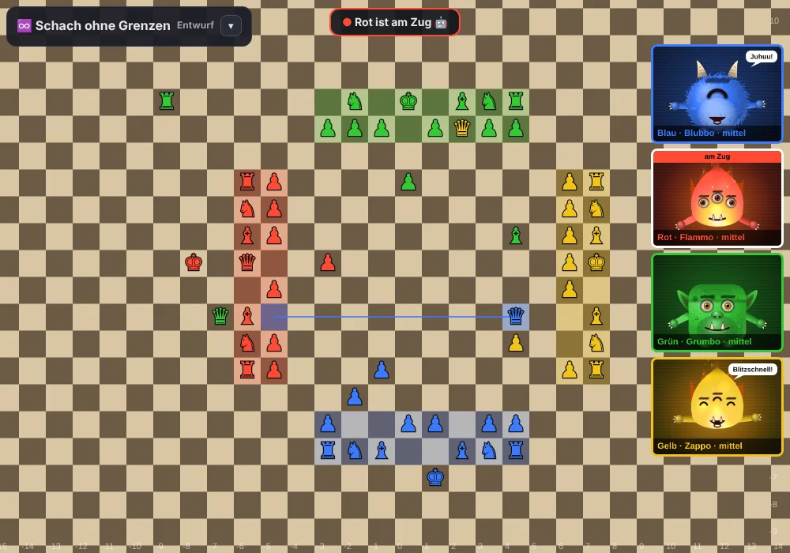
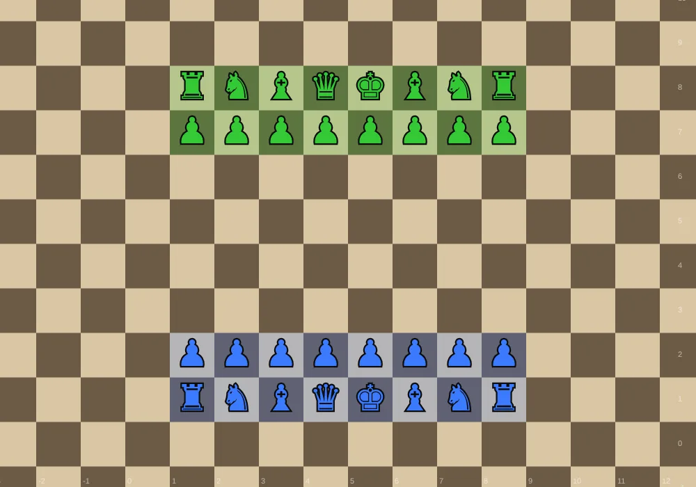
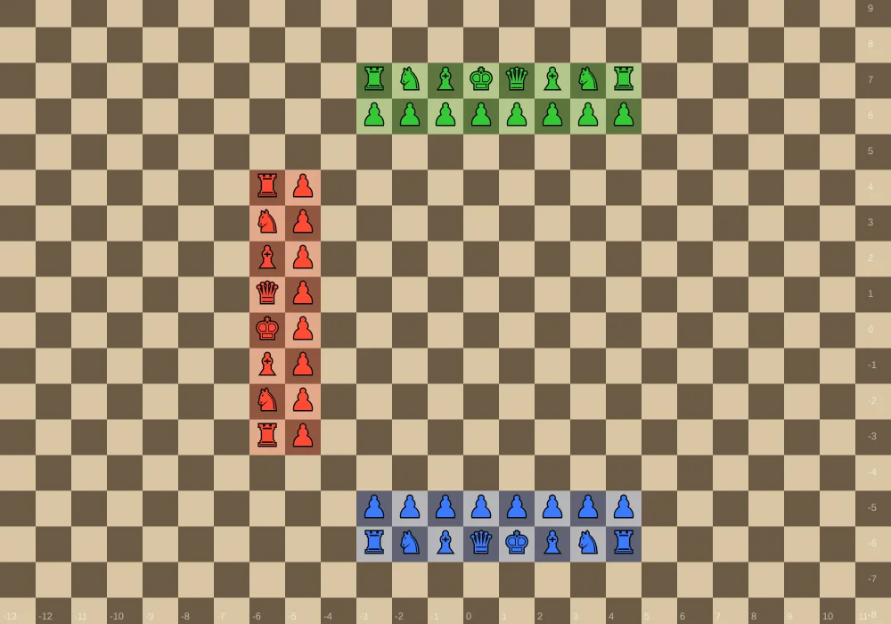
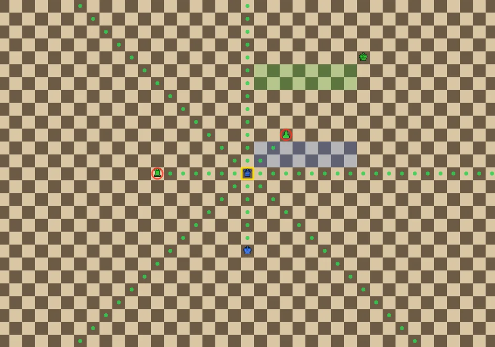
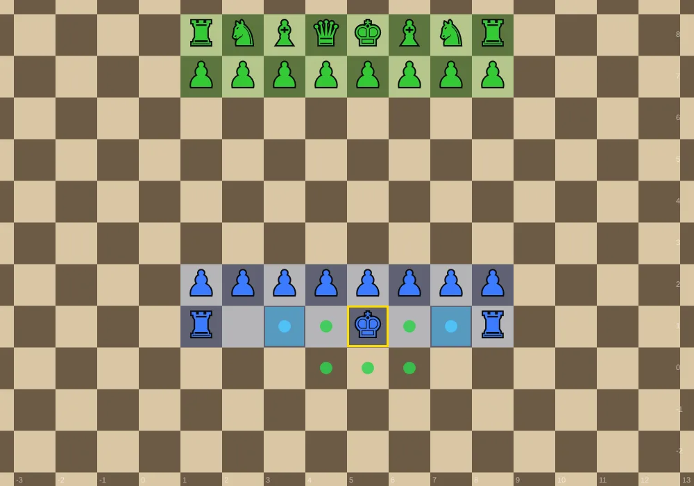
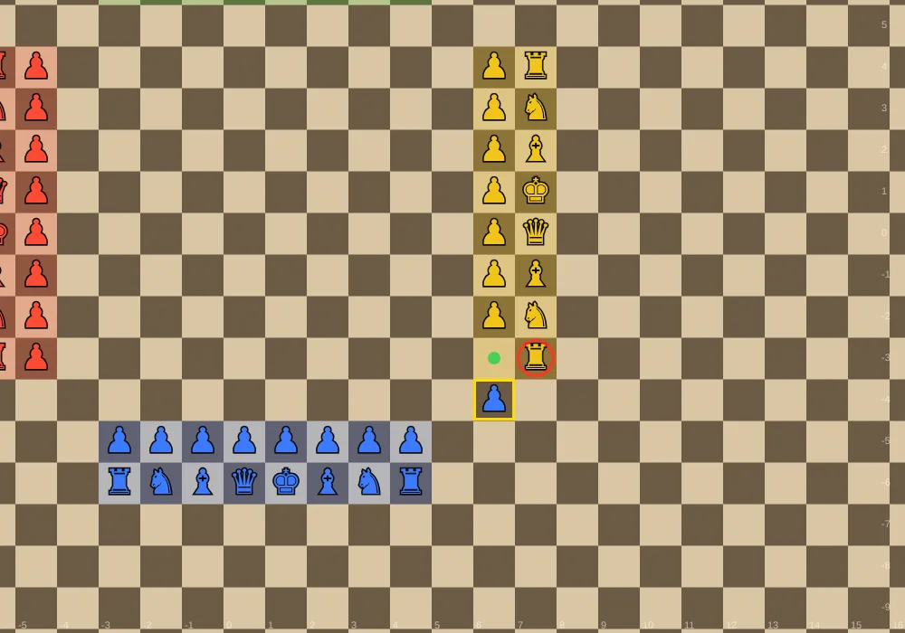
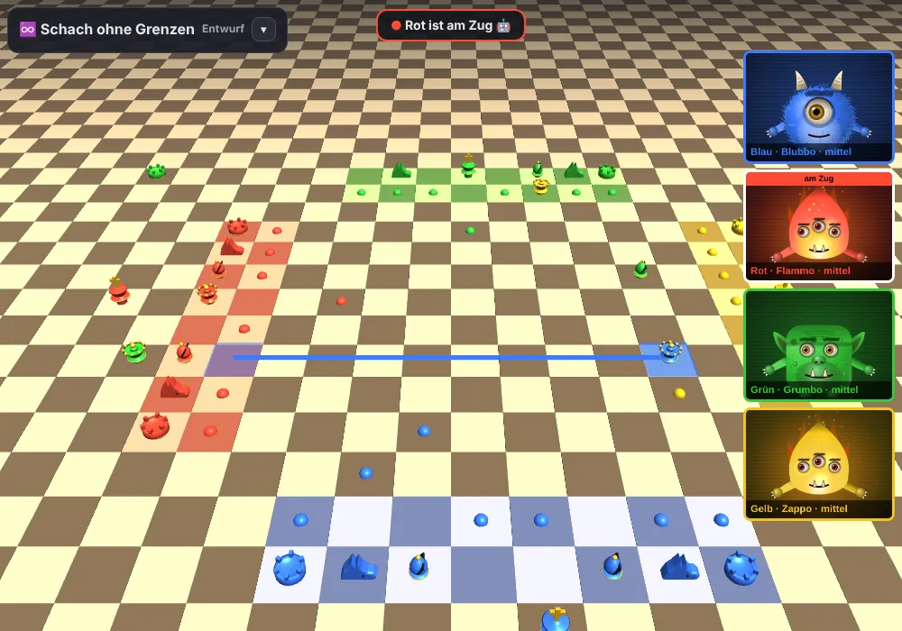

Шахи на трьох
Шахи на трьохШахи без меж
Цілком звичайні шахи – тільки дошка не має краю. Фігури можуть відходити ліворуч, праворуч, уперед і назад скільки завгодно. Удвох як звичайно, втрьох або вчотирьох армії сидять ніби за столом.

Розстановка

- Удвох Синій і Зелений стоять як у звичайних шахах.
- Утрьох і вчотирьох армії стоять ніби за столом: Синій унизу, Червоний ліворуч, Зелений угорі, Жовтий праворуч. Між арміями вільний простір у чотири ряди. Кожна армія має кольорову стартову зону з двох рядів.
- Кожен пішак іде до гравця навпроти.


Фігури
Усі фігури ходять як у звичайних шахах. Але на нескінченній дошці тура, слон і ферзь заходять дуже далеко: вони можуть піти до десяти полів за крайні фігури – гра показує кожне досяжне поле.

Рокіровка й взяття на проході

- Рокіровка: король і тура ще не ходили, між ними вільно, король не під шахом і не проходить через атаковане поле. Король іде на два поля в бік тури, тура перестрибує через нього.
- Взяття на проході: якщо пішак іде на два поля, пішак суперника може взяти його на проході – за кількох гравців, доки гравець із подвійним ходом знову не отримає хід.
Перетворення

- Удвох: як звичайно, на останній горизонталі суперника.
- Утрьох або вчотирьох вирішує господар: пішак стає ферзем, щойно входить до стартової зони іншого гравця, – або лише коли досягає ряду адміралів іншого гравця. Навпроти завжди діє й подовжена перша лінія.
Шах, мат і кінець партії
- Кому оголошено шах, той мусить від нього піти. Жоден хід не може залишити свого короля під шахом. Король під шахом світиться червоним.
- Кінець партії – обирає господар: «Перший мат вирішує»: перемагає той, хто поставив мат. «Вибування»: хто отримав мат, вибуває, його фігури зникають; гра триває, доки не лишиться один.
- У кого лишився тільки король, той переможений. Хто не може походити, не опинившись під шахом, пропускає хід.
- Після першого взяття: після 30 раундів без взять і без ходів пішаками вирішує матеріал (пішак 1, кінь і слон 3, тура 5, ферзь 9).
Не втрачати огляд

- Зсувати: тягнути. Масштаб: коліщатко миші або два пальці. Подвійний клік: показати всі фігури.
- Огляд праворуч унизу показує все, що відбувається; натискання переносить туди.
- Поворот дошки: свій бік унизу, до гравця, який ходить, або вручну.
- Натисніть на фігуру: її ходи видно зеленим (вільно), червоним (взяття) і синім (рокіровка). Фігури суперників показують ходи блакитним і помаранчевим, лише для перегляду. Останній хід виділено кольором того, хто ходив.
Що спільного в усіх варіантах
- Суперники: кожне місце може зайняти людина на цьому пристрої, людина, запрошена онлайн, або комп’ютер – чотирьох рівнів: легкий, середній, сильний і майстер. Майстер прораховує й відповідь суперників.
- Комп'ютерні суперники з характером: комп’ютерних суперників звуть Блуббо, Грумбо, Фламмо, Заппо, Спукі, Кракі, Сонно й Флафі. Вони радіють і сердяться на моніторах, укладають союзи проти лідера, іноді зраджують їх, мстяться – і говорять, якщо хочете. З ними можна домовлятися в чаті («Грумбо, нападімо разом на Червоного!»). Крім того, вони запам’ятовують, як грають люди. Для кожного комп'ютерного місця ти обираєш, який комп'ютерний суперник грає, – кожен має свій вигляд, свій голос і свій стиль гри: Фламмо кидається в атаку, Грумбо обороняється, Кракі терпляче будує позицію, Флафі жадібно збирає матеріал, Спукі полює на найслабшого. Кнопкою «🎤» можна просто з ними поговорити.
- Обов’язок допомоги (опція від трьох гравців): якщо гравець під шахом, кожен, хто ходить раніше за нього, мусить йому допомогти: якщо йому мат, хід має його звільнити; якщо не мат, хід не має ставити йому мат. Хто не може допомогти, скріплює мат.
- Годинник: час на хід, час на партію або без годинника. Якщо час на хід минув, хід пропадає; якщо час партії вичерпано, гравець вибуває.
- Онлайн: наживо з моніторами, камерою, мікрофоном, чатом, емодзі-реакціями, субтитрами й автоматичним перекладом – або заочно, коли кожен ходить, коли має час (зі сповіщенням, коли ваш хід). Партії можна запропонувати в загальному лобі; господар вирішує, чи можна спостерігати.
- Після партії: перегляд хід за ходом, дошка аналізу з підказками комп’ютера, розбір із ключовими моментами, психологічний розбір (помста, нервовість після втрат, тихі союзи, сказане й зроблене) і за бажанням професійний звіт ШІ.
- Крім того: вільний вибір кольорів (зокрема зі значками для людей із дальтонізмом), звуки, пауза, збереження й завантаження, «Мої партії», вступ для новачків, встановлення як застосунку, повний екран.
Шахи без меж – чернетка, вони далі розвиваються.